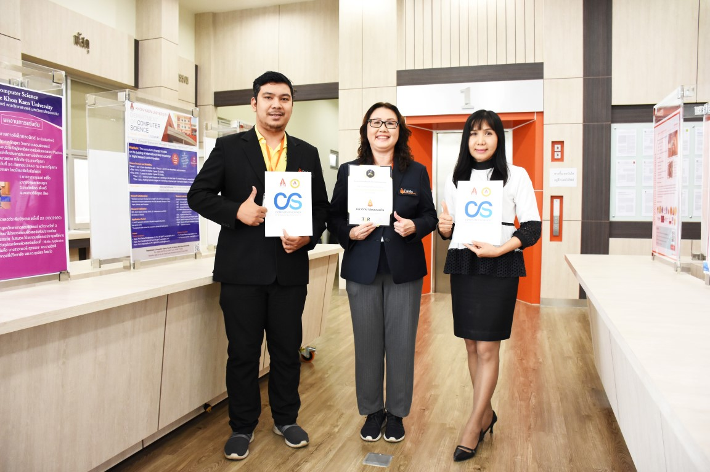

CSs@KKU ติด TOP10 สถาบันการศึกษาของรัฐด้านไอทีและเทคโนโลยีสารสนเทศ
สาขาวิชาวิทยาการคอมพิวเตอร์ คณะวิทยาศาสตร์ มหาวิทยาลัยขอนแก่น ติด TOP10 สถาบันการศึกษาของรัฐด้านไอทีและเทคโนโลยีสารสนเทศ ตามโครงการจัดอันดับมหาวิทยาลัยไทยยอดนิยม โดยสถาบันจัดอันดับด้านการศึกษา Thailand Education Ranking (TER) ซึ่งมี บริษัท อัพบีน จำกัด เป็นผู้สำรวจความคิดเห็นของนักเรียน นักศึกษา ผู้ปกครอง และประชาชนทั่วประเทศ จำนวน 7,720 คน (สำรวจทางออนไลน์) ซึ่งการจัดอันดับมหาวิทยาลัยไทยยอดนิยม ประจำปี 2563 ระหว่างวันที่ 1 กันยายน – 31 ธันวาคม 2563 ทั้งนี้ TER ได้รวบรวมผลการจัดอันดับสถาบันการศึกษาในประเทศไทย อาทิเช่น มหาวิทยาลัยไทยยอดนิยม The Most Popular Universities in Thailand ซึ่งมีเกณฑ์การจัดอันดับ ดังนี้
1.วัดความนิยมจากคะแนนโหวตของนักเรียน นักศึกษา และประชาชนทั่วประเทศ เก็บข้อมูลแบ่งตามหมวดคำถามความสนใจของผู้เรียน เช่น มหาวิทยาลัยยอดนิยมด้านวิศวกรรมศาสตร์ ด้านบริหาร-บัญชี ด้านนิเทศศาสตร์
2.เก็บข้อมูลแบ่งตามกลุ่มมหาวิทยาลัย เช่น มหาวิทยาลัยรัฐ มหาวิทยาลัยเอกชน มหาวิทยาลัยราชภัฏ เก็บข้อมูลและประกาศผลปีละ 1 ครั้ง (เก็บข้อมูลระหว่างเดือนมีนาคม – ธันวาคม และประกาศผลการโหวตในเดือนมกราคม – กุมภาพันธ์ของทุกปี) ทั้งนี้เพื่อใช้เป็นส่วนหนึ่งของข้อมูลให้นักเรียน นักศึกษา ผู้ปกครอง และประชาชนทั่วประเทศ ใช้เป็นข้อมูลประกอบการตัดสินใจเลือกศึกษาต่อในระดับมหาวิทยาลัยต่อไป
รศ. ดร.สิรภัทร เชี่ยวชาญวัฒนา หัวหน้าสาขาวิชาวิทยาการคอมพิวเตอร์ คณะวิทยาศาสตร์ มหาวิทยาลัยขอนแก่น ได้กล่าวว่า รู้สึกมีความยินดีเป็นอย่างยิ่งที่ นักเรียน นักศึกษา ผู้ปกครอง และประชาชนทั่วประเทศ กว่า 7,720 คนได้ให้ความนิยม มหาวิทยาลัยขอนแก่นของเรา โดยเฉพาะอย่างยิ่ง สาขาวิชาวิทยาการคอมพิวเตอร์ คณะวิทยาศาสตร์ ซึ่งเป็นสาขาวิชาที่มุ่งพัฒนาบัณฑิตด้านเทคโนโลยีดิจิทัลออกสู่สังคม เราจะพัฒนาคุณภาพด้านวิชาการ นวัตกรรม งานวิจัยที่มีคุณภาพ เพื่อรับใช้สังคมต่อไป

17 มีนาคม 2564